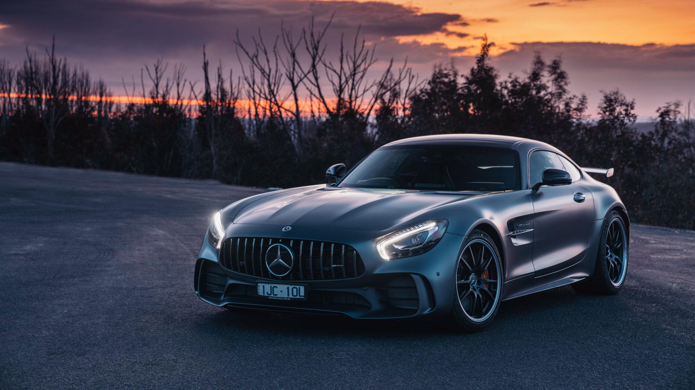
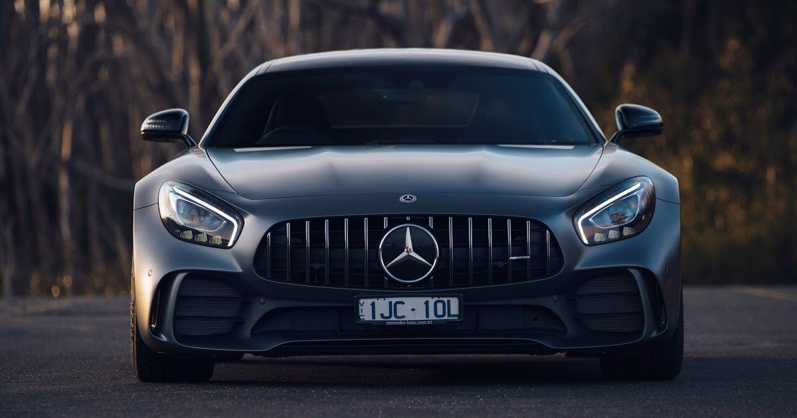
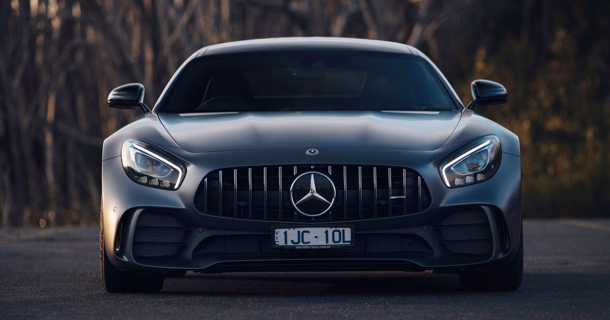

Founded in 1967, AMG was the brainchild of two former Mercedes engineers, Erhard Melcher and Hans Werner Aufrecht. AMG was originally meant to design, test, and produce racing engines, but they soon found that there was a demand for upgrades and customization well beyond just the engines. Up until 1990, AMG produced packages as well as fully customized vehicles.
1990 brought a major change, as Mercedes decided to recognize AMG’s efforts and there was a co-operation agreement signed between the two. This allowed AMG options and fully-customized cars into Mercedes showrooms, opening up the options to a greater variety of buyer. By the end of the millennium, Mercedes went all-in with AMG, buying a controlling share of AMG and making AMG cars part of the official Mercedes-Benz line-up. Below we take a look at every standalone AMG car built as well as every Mercedes-AMG built, a comprehensive view of all models to date.
 
